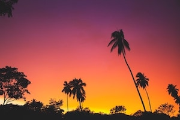

Baja is Muy Tranquilo
The following morning was slow going. We all congregated at the restaurant at Rice and Beans for breakfast before agreeing that traveling as a convoy sounded like a great idea. “We’ll follow you guys.” Brian said. And we did. We followed them for days. As our mis-matched convoy rolled out of San Ignacio that morning, there was a dense fog that had us all second-guessing where in the world we were. Once we got to higher ground, though, the cool fog lifted and gave way to the bright sun and intense heat. It was brutally hot.
To Mulege!
Unfortunately, hurricane Odiel had left this tiny, yet popular, town in a state of disrepair. And it was hot. So we got gas and moved on down the road as fast as we could. It was great! Driving through the desert, dust flying everywhere, not using AC in solidarity of our new friends who don’t have the option. We were “in it”. The road was winding and each turn led us closer to our destination: Bahia Conception. After a long day of driving and sweating and being mildly hung-over, there is absolutely nothing more beautiful than cresting over a pass and seeing the Sea of Cortez, an empty beach, and a palapa. Playa Santispac was, for the day, our new home. We set up our little gypsy camp and ran for the water. It was perfection. Beers flowing just after noon. The grounds keeper, for lack of a better term, was a chipper fellow who had a van full of hats, dresses and hammocks for sale. He also had a boat for rent by the hour, and assured us that Santispac was “muy tranquilo”...